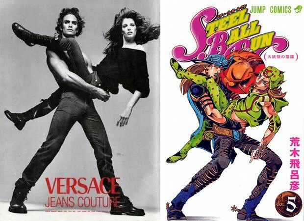

Le bizzarre avventure di JoJo è un manga scritto e disegnato da Hirohiko Araki. Fu pubblicato in Giappone a gennaio del 1987 e arrivò In Italia nel novembre del 1993. L'opera è in continuo sviluppo, ad oggi è divisa in 9 parti, ognuna con un protagonista diverso e nuove avventure.
Nel corso degli anni il manga ha ottenuto due adattazioni animate, la prima, comunemente chiamata OVA, fu realizzata nel 1993. Questa vanta 13 episodi, tutti incentrati sulla terza parte. La seconda adattazione iniziò ad ottobre del 2012 e finì nel dicembre del 2022. Questa seconda adattazione animata tratta le prime sei parti del manga, trasormandole in un una serie anime.
Hirohiko Araki iniziò a disegnare e scrivere manga dalla giovane età dei 16 anni, fu ispirato ad iniziare dall'ambiente circostante e dalle sue esperienze personali. Ottenne diverse critiche ma iniziava già a formarsi il suo stile narrativo e artistico. Nel corse degli anni Araki ha ottenuto vari riconoscimenti per le sue opere ed organizzo varie collaborazioni con brand famosi.
La storia si svilupa intorno alla dinastia dei Joestar, in tutte le parti, infatti, è presente almeno un membro della famiglia, e ognuna si svolge in un diverso momento storico e in un punto diverso del mondo. Tutti i protagonisti hanno come nomignolo "JoJo", derivante dalle lettere che formano il nome e il cognome, per esempio il primo JoJo si chiama Jonathan Joestar.
In Inghilterra alla fine XIX secolo, un ladro di nome Dario Brando cerca di derubare un ricco aristocratico chiamato George Joestar I mentre era svenuto a causa di un'incidenta in carrozza, però l'aristocratico di sveglia e crede che il ladro lo abbia salvato, quindi gli promette che esaudirà un qualunque favore.
Qualche anno dopo Dario Brando si ritrova sul letto di morte e parla al figlio, Dio Brando (colui che diventerà il cattivo pricipale per gran parte della serie), della promessa fatta da George Joestar e gli dice di andare da lui e farsi adottore. Dio Brando segue il consiglio del padre e raggiungendo la magione dei Joestar fa la conoscenza di Jonathan Joestar, il figlio di George.
Dio Brando è una persona con un'animo malvagio, infatti durante la permanenza nella casa dei Joestar tormenta il protagonista e, volendo ottenere tutta l'eredità del padre adottivo lo avvelena lentamente. Intanto JoJo a degli studi su un'antica mascera di pietra, in grado di trasormare in vampiri chi la indossi, JoJo non la usa, ma quando Dio viene a sapere della maschera la ruba in caso di emergenza e, venendo scoperto ad avvelenare il padre, la usa.
Jonathan si ritrova così a dover cercare e sconiggere Dio, cosa che apparentemente riesce a fare, morendo nel tentativo.
Nel 1938 Joseph Joestar, nipote di Jonathan, si ritrova a dover fronteggiare i cosiddetti Uomini del Pilastro, esseri presenti da prima degli umani, simili ai vampiri ed ideatori della maschera di pietra. Questi uomini erano caduti in un sonno profondo, ma secondo una profezia si sarebbero dovuti svegliare a breve, così fecero.
Joseph si allena a Venezia e impara a padroneggiare le stesse tecniche che Jonathan usò quando era in vita per sconfiggere Dio. Dopo l'allenamento Joseph affronta i nemici in Germania e li sconfigge uno ad uno.

In questa parte dell'opera, ambientata nel 1988, si introduce un nuovo tipo di potere, lo Stand, un'estensione del corpo e dell'anima. Il protagonista di questa parte, Jotaro Kujo, ottiene questo potere, insieme a ogni membro della dinastia, dopo che il corpo di Jonathan, impossessato da Dio, ottiene uno stand. Dio infatti è riuscito a sopravvivere per tutti questi anni ed ha sviluppato nuove capacità e uno stand. Con i suoi nuovi poteri, Dio raggruppa molti servitori che manda come sicari alla ricrca dei Joestar, sapendo che loro sono gli unici che potrebbero sconfiggerlo. In questa parte è presente anche Joseph, ormai sessantenne ma comunque vivace e attivo, in questa parte lui non è il protagonista principale, ma essendo il nonno del protagonista ha un ruolo importante per lo sviluppo degli eventi. I protagonisti cercano la posizione dell'antagonista, e dopo aver scoperto che Dio si trova al Cairo (in Egitto), partono in questo grande e turbolento viaggio, dal Giappone al Cairo, ma si ritrovano a combattere tutti i sicari che Dio gli ha mandato contro, tutti portatori di stand. Jotaro ed i suoi compagni raggiungono il Cairo e sconfiggono definitivamente Dio.

La quarta parte, il cui protagonista è Josuke Joestar Higashikata, il figlio illegittimo di Joseph, si sviluppa in Giapponne nell'estate del 1999.
Inizialmente Jotaro viagge in una cittadella del Giappone dopo che Joseph ammette di avere un figlio li, dopo aver trovato Josuke si scopre una freccia, chiamata freccia stand, questa è come un'entità senziente che, quando colpisce un'essere vivente, sceglie se questa è degna di possedere o ne uno stand. Questa freccia viene rubata da diversi nemici, che la usano per i loro scopi, quindi Josuke con i suoi compagni e Jotaro devono ritrovare la freccia e sconfiggere i nemici.
Insieme alla freccia si scopre anche che nella cittadella vive un'assissino, Kira Yoshikage, anch'esso portatore di stand. Josuke e i suoi compagni, agiscono e dopo una lunga ricerca riesco a trovare e sconfiggere l'antagonista.
Questa parte dell'opera potrebbe essere considerata una parte di spiegazione sugli stand e le loro origini.
Questa parte delle bizzare avventure di JoJo è stata rielaborata in un film live action.
La quinta parte dell'opera è ambientata in Italia, nel 2001, il nostro protagonista, Giorno Giovanna, è il figlio di Dio Brando, ma Giorno non conosce suo padre. Giorno tecnicamente è un Joestar perchè quando Dio lo ha concepito aveva impossessato il corpo si Jonathan Joestar.
Giorno odia la mafia e lo spaccio di droga, quindi decide di infiltrarsi in essa per arrivare al boss, la cui identità è segreta. Giorno si unisce ad un gruppo e scopre che anche questo complotta contro l'organizzazione. Il capo del gruppo ha recentemente ottenuto una promozione e ha avuto l'incarico di scortare la figlia del boss, figlia di cui neanche lui sapeva.
Dopo aver viaggiato per l'Italia ed aver protetto la figlia del boss da innumerevoli sicari, i protagonisti e la figlia del boss, che in realtà disprezza il padre, si rivoltano contro il boss. Ne seguono altri combattimenti contro dei sicari e alla fine riescono a sconfiggere il boss. Senza il boss, Giorno diventa il nuovo capo della mafia e ferma lo spaccio di droga.
La sesta parte è considerabile l'ultima della serie originale, nella prossima parte approfondirò l'argomento.
L'ultima parte dell'opera è anche la prima ad avere una protagonista donna, Jolyne Kujo, la figlia di Jotaro Kujo. I fatti avvengo in Florida nel 2011. La protagonista viene incastrata e incarcerata con l'accusa di omicidio, in prigione incontra vari nemici e fa diverse amicizie. Il padre va a trovarla, ma si scopre che il nemico aspettava proprio questo, infatti attacca i due matenendo la sua identità celata e ruba i ricordi di Jotaro, lasciandolo in fin di vita. Jolyne scappa di prigione per combattere il nemico, che si scopre essere il prete della prigione, Padre Enrico Pucci. Pucci successivamente rivela di aver rubato i ricordi di Jotaro perchè li è presente il contenuto del diario di Dio Brando, di cui Pucci era grande amico e stimatore prima degli eventi della terza parte.
Nel diario di Dio ci sono le sue memorie, si scopre che prima degli eventi della terza parte Dio meditò a lungo e capì come raggiungere il Paradiso, cioè uno stato mentale in cui tu sai il tuo destino e sei quindi in pace con te stesso. Enrico Pucci vuole far raggiungere all'interà umanità di ogni tempo e spazio questo stato, ma visto che Jotaro bruciò il diario di Dio dopo averlo sconfitto alla fine della terza parte, ha dovuto escogitare questo piano.

In un videogio non canonico della serie (Le bizzarre avventure di JoJo: eyes of Heaven), Dio riesce a raggiungere il Paradiso, ottenendo poteri incredibili.
Pucci inizia a seguire il piano per il Paradiso e inizia e ottenere nuovi poteri, poteri che metteranno in difficolta la protagonista. Jolyne dopo un gran numero di combattimenti riesce a ottenere i ricordi di Jotaro, ridandoglieli. I due insime raggiungono Pucci e inizia il combattimento finale, durante il quale Pucci riesce a raggiungere il Paradiso, diventando troppo forte, persino per i protagonisti, che vengono sconfitti. Però uno dei membri del gruppo riesce a scappare e con un po di ingegno riesce a sconfiggere Pucci, però visto che il prete aveva raggiunto il Paradiso, la sua morte crea dei nuovi eventi dove Pucci non è mai esistito.
Ora che Pucci è morto non ci sono più minacce per la famiglia Joestar. Così terminano le bizzarre avventure di JoJo. O almeno così si credeva.
Diversi anni dopo la fine della sesta parte dell'opera venne pubblicarta la settima parte di JoJo, seguita dall'ottava e la nona, la quale è ancora in corso al momento della pubblicazione di questa rubrica. Come ho iniziato a dire nella parte precedente, queste parti non sono un effettiva aggiunta nella storia dell'opera, questo perchè le parti successive alla sesta sono ambientate in un'altro universo, non sono quindi collegate agli avvenimenti precedenti, anche se spesso vengono fatti riferimenti a questi.
In queste parti vengono introdotte nuove tecniche e vengono anche usate quelle vecchie.
Le bizzarre avventure di JoJo è un anime molto famoso in tutto il mondo. I personaggi e gli avvenimenti hanno reso memorabile l'opera, da cui provengono famosi meme, come il famoso to be continued, nato dalla sigla finale delle prime stagioni dell'opera. Un'altro famoso meme è Kono Dio da (la cui immagina è presente nella prima parte), usato di solito quando viene rivelata una persona inaspettata.
Oltre ad aver creato canzopni e meme, i fan di JoJo riproducono le pose bizzarre in cui i personaggi vengono rappresentati. Queste sono chiamate JoJo pose. Le JoJo pose non vengono eseguite solo dai fan, spesso vengono riprodotte anche in altri contesti e sono riconoscibilissimme.
Come detto prima, i fan di JoJo spesso riescono a trovare dei riferimenti all'opera in altre opere, in video, immagini... Queste sono dette JoJo reference. Le reference sono molto gradite dai fan, che cercano spesso di trovarle o crearne.
Nel 2009 Araki venne selezionato dal Museo del Louvre per rappresentare la varietà artistica dei fumetti. Per celebrare l'autore creò l'opera Rohan au Louvre, con protagonista Rohan Kishibe, un personaggio apparso nella quarta parte. Le tavole di Araki sono state esposte dal 19 gennaio al 13 aprile all'interno della mostra Le Louvre invite la bande dessinée (Il Louvre invita il fumetto). Rohan au Louvre ha ricevuto una adattazione cinematografica live action.
Dal 17 settembre al 6 ottobre 2011 il negozio Gucci di Shinjuku ospitò l'esposizione Gucci x Hirohiko Araki x Spur 'Kishibe Rohan Gucci e Iku' Exposition, la collaborazione era tra la casa di moda italiana, Araki e la rivista di moda di Shūeisha Spur. La mostra celebrò i novant'anni di attività della Gucci e ha presentato diverse tavole di Araki, rappresentanti i vari personaggi dell'opera mentre indossano pezzi della collezione autunno/inverno 2011-2012. Oltre a questo vennero pubblicati i manga one-shot Kishibe Rohan Gucci e Iku e Jolyne, Gucci de tobu.
Questa è tecnica, chiamata nelle altre lingue hamon, viene utilizzata durande le prime due parti dell'opera. Consiste in una respirazione che permitte al corpo di produrre un'energia simile a quella del sole, quindi efficace contro i vampiri e gli uomini del pilastro.
Gli Stand sono un'estensione del corpo e dell'anima, possono essere controllati da chi li possiede e posono interagire con il mondo circostante. Solo una persona con uno stand può vedere uno stand, quindi questi sono invisibili alla gran parte della popolazione. Gli stand possona avere diversi poteri, dal controllare il meteo al cambiare il proprio aspetto, alcuni possono anche prevedere il futuro. In JoJo un'elemento importante è il destino, grazie a questo infatti, molti portatori di stand tendono ad incontrarsi. Bisogna anche aggiungere che gli gli stand crescono insieme ai loro portatori, cambiando aspetto o diventando più forti. Di solito questi poteri hanno una forma umanoide, ma non sempre.
Gli stand possono risvegliarsi in una persono in tre modi: avendo lo stand come abilità innata sin dalla nascita; ottenendolo perchè un membro della propria dinastia lo possedeva (il motivo per cui tutti i protagonisti hanno uno stand); risveglio dopo essere stato colpito con una freccia stand, questa freccia contiene una specie di virus che decide se una persona è degna o no di possedere uno stand, questo è un metodo rischioso, perchè se non si fosso degli si morirerbbe.
Oltre che risvegliare uno stand, la freccia può fare altre cose: se colpisce qualcuno che è già un portatore di stand potrebbe risvegliare un'altro aspetto dello stand; se la freccia colpisse uno stand, sempre se il portatore è degno, questo ottiene un potenziamento detto requiem.
Il requiem è un concetto non troppo sviluppato nell'opera ed è tuttora un mistero, infatti sappiamo che uno stand diventa incredibilmente più forte, così tanto che non ne conosciamo i limiti.

Star Platinum è lo stand del protagonista della terza parte di JoJo, è dotato di una incredibile forza fisica e un'altissima velocità. Si muove tanto velocemente da poter muoversi nel tempo quando è fermo (anche se solo per pochi secondi), rendendolo la controparte di The World, lo stand dell'antogonista di quella parte.
Lo stand di Dio Brando, antagonista della terza parte. Come Star Platinum è dotato di un'incredibile forza e velocità. Questo stand può fermare il tempo per qualche secondo.
Come molti altri nomi di personaggi e stand, anche il nome di questo stand è preso da una canzone: Shine On You Crazy Diamond di Pink Floyd.
Lo stand può riparare gli oggetti rotti e curare le persone, ma non il portatore stesso. Inoltre Crazy Diamond è dotato di una grande forza fisica.
Dalla omonima canzone dei Queen, Killer Queen è uno stand dalla grande capacità distruttiva. È in grado di rendere quello che tocca una bomba, compresi gli esseri viventi, quando una bomba esplode (esplosione che può solo avvenire a comando o a impatto) non danneggia la bomba stessa, questa abilità è definita "La prima bomba di Killer Queen". "La seconda bomba di Killer Queen" è una bomba dotata di ruote che insegue gli avversari finché non li raggiunge. Questa bomba ha piccolre dimensioni ed è molto veloce, ma fa tanto rumore, inoltre è indistruttibile, quindi difficilissima da fermare. Il suo nome è Sheer heart attack, nome sembre ispirato ad una canzone dei Queen. "La terza bomba di Killer Queen", chiamata Another one bites the dust, sermpre da una canzone dei Queen, è un potere che quando viene attivato protegge il portatore. In situazioni di estremo pericolo l'abilità si innesca, facendo esplodere chi minaccia alla vita del portatore e facendo tornare indietro il tempo di un'ora, chi esplode per via di questo potere è destinato ad esplodere dopo un'ora dal salto temporale. La protezione che da questo potere ha un costo, mentre è attiva lo stand non può essere usato in altri modi.
Killer Queen, anche se dotato di un formidabile arsenale, non è molto forte e veloce, ma il suo portatore, Kira Yoshikage, ne fa buon uso.

Il nome viene dall'album di Price The Gold Experience. Il suo potere consiste nel creare vita organica, come piante o piccoli animali, dove colpisce con i suoi pugni, questa abilità è utilizzata spesso per curare le ferite delle persone. Le sue capacità fisiche sono molto limitate.

Sempre considerando le abilità della versione normale, questo potenziamento rende le sue capacità fisiche estremamente elevate. Inoltre la creazione di vita organica avviene anche a distanza. Questo stand può agire autonomamente e riesce ad alterare il destino del portatore.
King Crimson, nome ispirato dalla omonima band musicale. Tra i suoi poteri troviamo il poter "saltare" un secondo, potendo interagire e vedere quello che succede, muovendosi ad alta velocità. Questa abilità rende i nemici indifesi e facilmente attaccabili. La forza fisica di questo stand è estremamente elevata.
La capacità di questo stand è trasformare il proprio corpo e quello del portatore in filo, la lunghezza dipende da quante parti del corpo trasformi in filo.
L'abilità principale di questo stand è che quando tocca una persona vengono esratti due dischi, uno con lo stand della persona e uno con i suoi ricordi. Rimuovere entrambi i dischi causa la morte della persona. I dischi possono essere inseriti anche dentro alre persone non poratrici di stand, dandogli la possibilità di usarlo come se fosse proprio, ma solo se sono affini a questo.